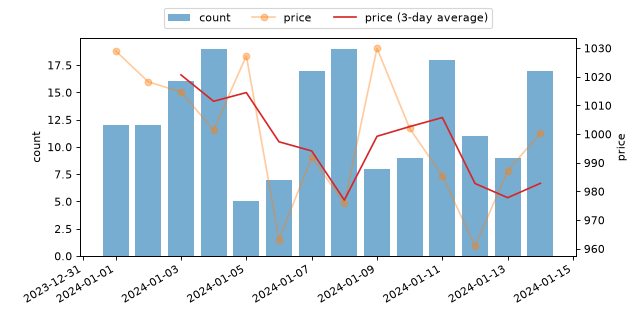

2 系列の時系列データを比較する
日々の「注文件数」と「平均価格」のように、単位の異なる 2 つの時系列を比較する例です。twinx で重ねて表示し、価格については pandas の rolling で移動平均も求め、傾向を合わせて確認します。
データの準備
import numpy as np
import pandas as pd
dates: pd.DatetimeIndex = pd.date_range("2024-01-01", periods=14, freq="D")
rng: np.random.Generator = np.random.default_rng(seed=1)
counts: np.ndarray = rng.integers(5, 20, size=14)
prices: np.ndarray = rng.normal(loc=1000, scale=50, size=14)
df: pd.DataFrame = pd.DataFrame(
{"count": counts, "price": prices}, index=dates
)
移動平均を求める
価格は日々のばらつきが大きいため、直近 3 日分の平均（移動平均）も合わせて計算し、傾向を見やすくします。
df["price_ma"] = df["price"].rolling(3).mean()
# rolling(3).mean() は、自分を含む直近 3 件の平均を計算する
# 先頭 2 件は直近 3 件分のデータが揃わないため NaN になる
グラフとして可視化する
件数を棒グラフ、価格とその移動平均を折れ線グラフにして、twinx で 1 つのグラフに重ねます。
import numpy as np
import pandas as pd
import matplotlib.pyplot as plt
from matplotlib.axes import Axes
from matplotlib.figure import Figure
dates: pd.DatetimeIndex = pd.date_range("2024-01-01", periods=14, freq="D")
rng: np.random.Generator = np.random.default_rng(seed=1)
counts: np.ndarray = rng.integers(5, 20, size=14)
prices: np.ndarray = rng.normal(loc=1000, scale=50, size=14)
df: pd.DataFrame = pd.DataFrame(
{"count": counts, "price": prices}, index=dates
)
df["price_ma"] = df["price"].rolling(3).mean()
fig: Figure
ax1: Axes
fig, ax1 = plt.subplots(figsize=(8, 4))
ax1.bar(df.index, df["count"], color="tab:blue", alpha=0.6, label="count")
ax1.set_ylabel("count")
ax2: Axes = ax1.twinx()
ax2.plot(
df.index, df["price"], color="tab:orange", alpha=0.4, marker="o",
label="price",
)
ax2.plot(
df.index, df["price_ma"], color="tab:red", label="price (3-day average)"
)
ax2.set_ylabel("price")
handles1, labels1 = ax1.get_legend_handles_labels()
handles2, labels2 = ax2.get_legend_handles_labels()
ax1.legend(
handles1 + handles2, labels1 + labels2,
loc="lower center", bbox_to_anchor=(0.5, 1.02), ncols=3,
)
fig.autofmt_xdate()
# 日付ラベルが重ならないよう、斜めに表示する


